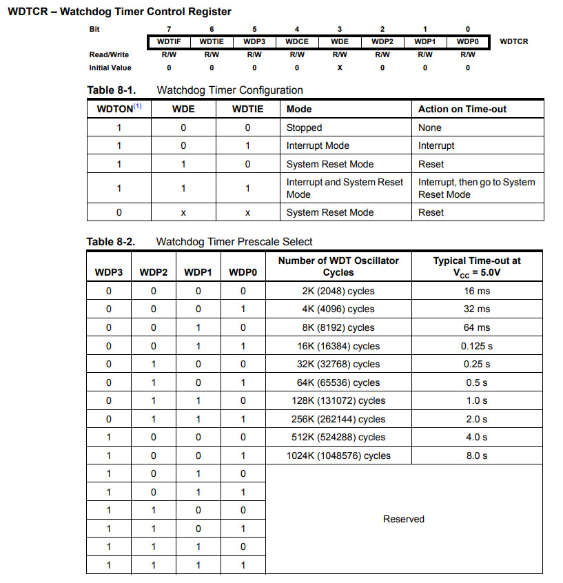

參考資訊：
https://www.microchip.com/en-us/product/attiny13#Documentation
https://nerdathome.blogspot.com/2008/04/avr-as-usage-tutorial.html
本練習使用Watchdog Interrupt模式(不會執行Reset)，因此，Watchdog觸發後，會從Sleep指令繼續往下執行

.equ PINB, 0x16
.equ DDRB, 0x17
.equ PORTB, 0x18
.equ WDTCR, 0x21
.equ MCUSR, 0x34
.equ MCUCR, 0x35
.equ LED, 1
.org 0x0000
rjmp main
reti
reti
reti
reti
reti
reti
reti
reti
reti
.org 0x0020
main:
sbi DDRB, LED
sbi PORTB, LED
ldi r16, 0x30
out MCUCR, r16
ldi r16, 0x60
out WDTCR, r16
sei
sleep
cbi PORTB, 1
loop:
rjmp loop
編譯和燒錄
$ avr-as -mmcu=attiny13 -o main.o main.s $ avr-ld -o main.elf main.o $ avr-objcopy --output-target=ihex main.elf main.ihex $ sudo avrdude -c usbasp -p t13 -B 1024 -U flash:w:main.ihex:i
完成